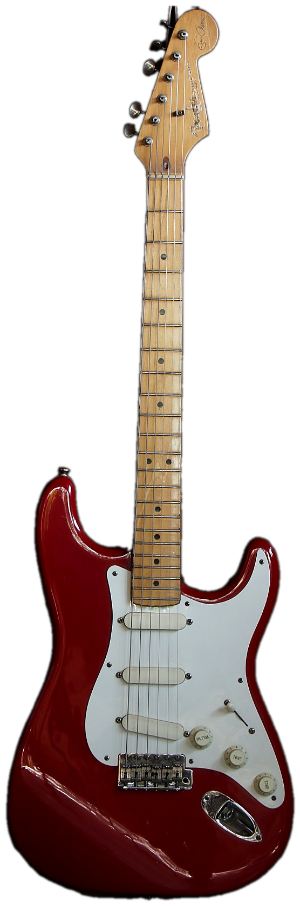

Serie verificada
01
Foto real

Fender
Eric Clapton Stratocaster
Añoc. 1988–89
OrigenCorona, EE.UU.
N° de serieSE801751
Lanzado en 1988 dentro de la primera generación Artist Series de Fender, replica a "Blackie", el Stratocaster que Clapton armó en 1970 con piezas de varios instrumentos de los años 50 comprados en Nashville — el original se subastó en 2004 por US$959.500 a beneficio de su fundación Crossroads. El prefijo "SE" identifica los primeros lotes de decalcomanías de la Artist Series usados en Corona a fines de los 80; este ejemplar corresponde a esa tanda inicial. Mantiene el cuerpo de aliso, el mástil perfil "V" suave y una electrónica poco habitual en un Strat: control TBX combinado con boost activo de medios de 25dB.